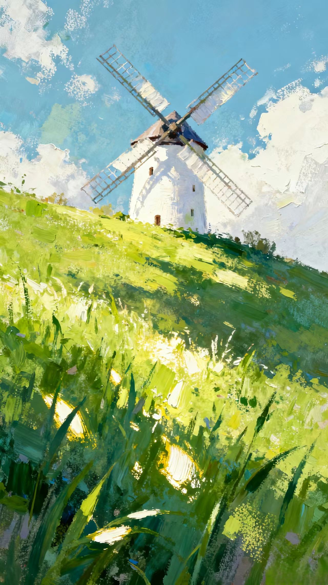
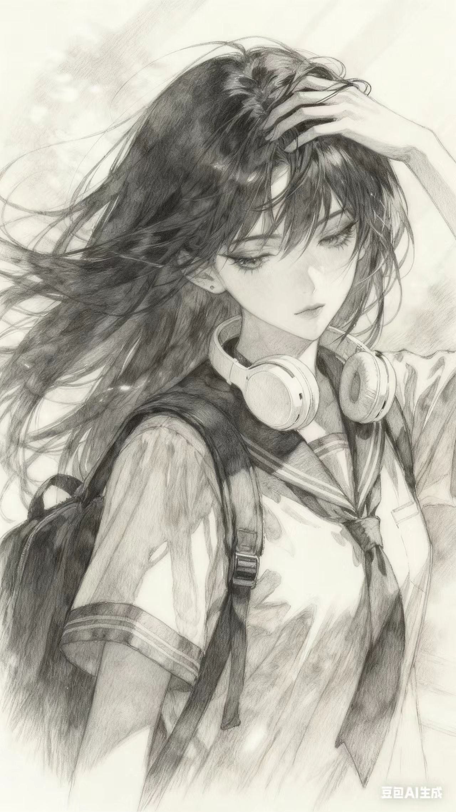

Meaning appears only after silence learns to breathe.
The thought that survives is the one that yields.

Opposites do not cancel; they define a horizon.
Perception is a border that keeps moving.
确认选择
返回原界面